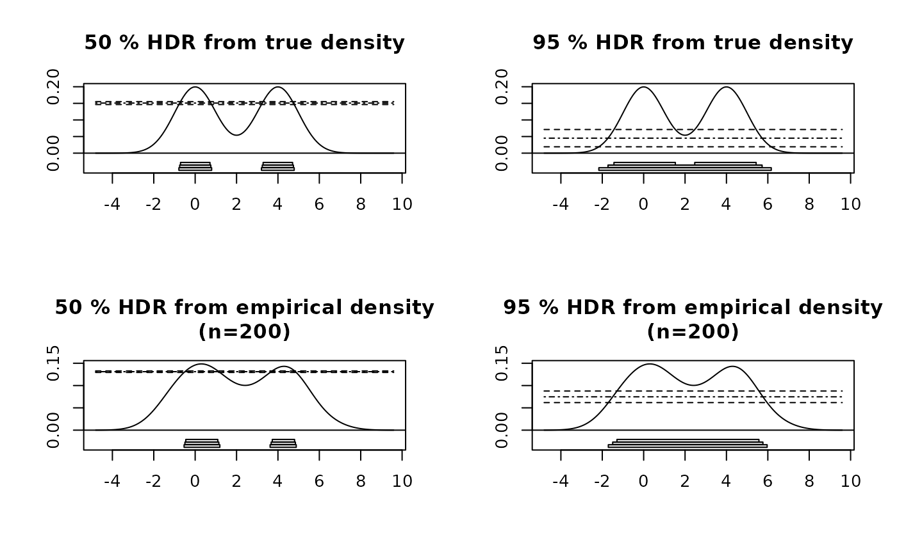

Calculates Highest Density Regions with confidence intervals.
hdrconf(x, den, prob = 95, conf = 95)Numeric vector containing data.
Density of data as list with components x and y.
Probability coverage for for HDRs.
Confidence for limits on HDR.
hdrconf returns list containing the following components:
Highest density regions
Highest density regions corresponding to lower confidence limit.
Highest density regions corresponding to upper confidence limit.
Values of \(f_\alpha\) corresponding to HDRs.
Values of \(f_\alpha\) corresponding to lower and upper limits.
Hyndman, R.J. (1996) Computing and graphing highest density regions American Statistician, 50, 120-126.
x <- c(rnorm(100,0,1),rnorm(100,4,1))
den <- density(x,bw=hdrbw(x,50))
trueden <- den
trueden$y <- 0.5*(exp(-0.5*(den$x*den$x)) + exp(-0.5*(den$x-4)^2))/sqrt(2*pi)
sortx <- sort(x)
par(mfcol=c(2,2))
for(conf in c(50,95))
{
m <- hdrconf(sortx,trueden,conf=conf)
plot(m,trueden,main=paste(conf,"% HDR from true density"))
m <- hdrconf(sortx,den,conf=conf)
plot(m,den,main=paste(conf,"% HDR from empirical density\n(n=200)"))
}
